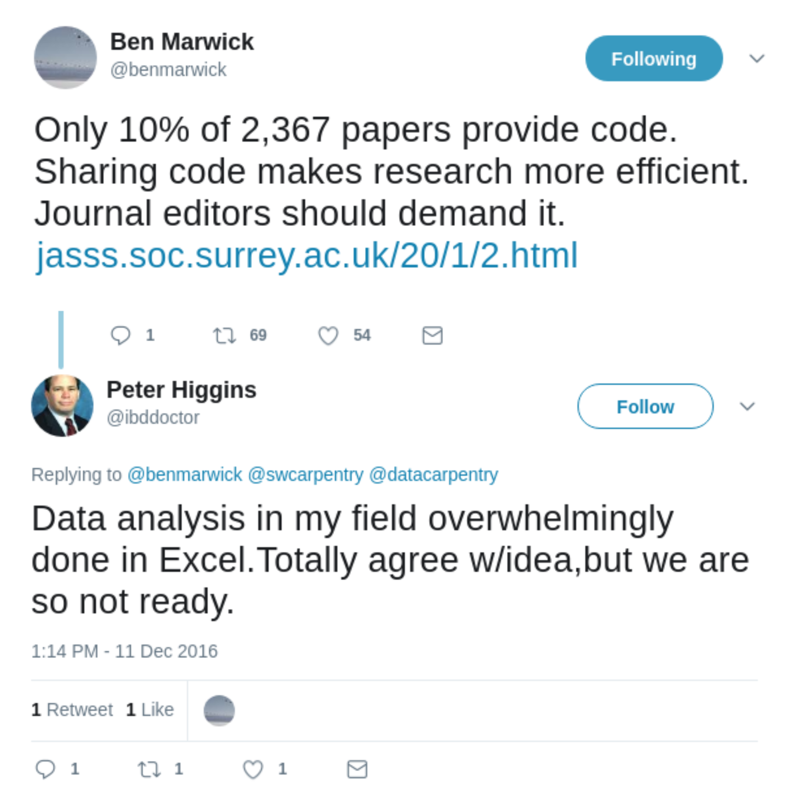
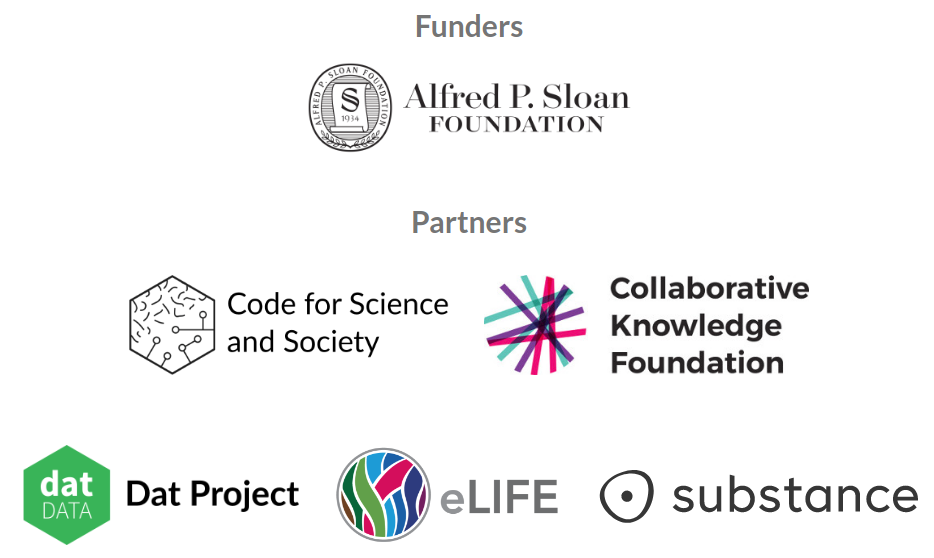

class: center, middle ## Stencila Sheets feature design workshop #### Alfred P. Sloan Foundation #### 3 November 2017 <div> <a href="https://twitter.com/NokomeBentley">@NokomeBentley</a> <a href="https://twitter.com/stencila">@stencila</a> </div> <p style="position: absolute; bottom: 10px; font-size: 12px">Press <code>C</code> to clone a display; then press <code>P</code> to switch to presenter mode</p> --- class: center, middle ### Researchers are under increasing pressure to make their research reproducible  ??? There is growing recognition, including in the mainstream media, of a so called "reproducibility crisis" in science. And the calls for researchers to make their research more reproducible are growing louder. Researchers, from digital humanities, to neuroscience, to data driven journalism are being encouraged to make their work open, transparent and reproducible. --- class: center, middle ### But creating reproducible research can be difficult... particularly if you don't know how to code. ??? But creating reproducible research can be difficult, particularly if you're not a coder. That's not surprising, the tools for reproducible research have been created by researchers at the "codey" end of the spectrum. They, like me, have been "scratching their own itch" and creating tools that they, as coders, find useful. But for people who are less comfortable with code, that can be intimidating - it creates a barrier to entry which alienates them from reproducible practices. --- class: center, middle  ??? That situation is captured well in this Twitter conversation. Ben Marwick, an archaeologist and strong advocate for reproducible research, tweeted that journal editors should demand sharing code. The Twitterverse responded enthusiastically with retweets and likes. But there was a lone reply from Peter Higgins, a biomedical researcher, who pointed out that while that is an admirable goal, in his field they are "so not ready" to share code, simply because most people still use Excel. --- class: center, middle  .note[Life science researchers. Courtesy of Naomi Penfold, eLife] ??? This is indeed borne out in the data. This plot, courtesy of the publisher eLife, illustrates just how dominant Excel still is in life sciences. The situation is probably similar in many other fields of research --- class: center, middle ### Moving tools for reproducibility **towards the user**... an "office suite" for reproducible research? ??? Currently, the primary strategy for making more research reproducible is to encourage researchers to move towards the existing code-based tools. Organizations like Data Carpentry do a great job of that by teaching researchers to learn to code and use these tools. But an additional, complementary, strategy might be to **move the tools towards the user**. And a lot, if not most, research activity lives in a world of the office suite: spreadsheets and word processors. --- class: center, middle <video class="centered" height="580px" controls="controls" autoplay="" loop=""> <source src="doc-screencast.mp4" type="video/mp4"> </video> ??? That is the approach that we have been taking with Stencila. We're trying to create user interfaces for doing reproducible research that are familiar, and thus intuitive, to most researchers. Here is an example of a Stencila document. It's a research article which provides simple tabular and graphical summaries of some ecological data. The interface is similar to a stripped down version of Microsoft Word. You can do the usual things that people do with textual documents: insert text and paragraphs, create headings etc. But in addition, you can insert cells of code, in this case R code, that produce the figures and tables. You can update that code, in place in the document. A key aspect is that code and it's output are in the same place, right next to each other. Internally, the code gets carried through with the document from authoring through to publication. --- class: center, middle <video class="centered" height="580px" controls="controls" autoplay="" loop=""> <source src="sheet-screencast.mp4" type="video/mp4"> </video> ??? One of the first bits of feedback we got from people when we presented Stencila documents was "what about all the people that don't know how to code, those who use Excel, how does this help them?" I was one of those researchers who had moved away from spreadsheets and had forgotten how many people still use them. We realised that we could take the technology which we had developed for embedding code cells in a document and essentially just reshape it into the familiar grid of a spreadsheet. This is a prototype of a Stencila sheets that we created 18 months ago. What sets this prototype apart from Excel is that the formulas in the cells are actually bits of R code. The system works out the dependencies between those cells of R code and when you change one cell all the other cells that depend on it get updated. --- class: middle ### Stencila Sheets feature design workshop - ### is this an idea worth pursuing? - ### what features would you like us to add? - ### what features do you think we should drop? - ### what do you think of the features that we've protoyped? ??? And so,... that brings us to today! We are very fortunate to have received funding from the Sloan Foundation to take Stencila sheets beyond the prototype stage and to a "minimum viable product" - something we can use to gage how much potential demand there might be for such a product. That's the purpose of today's workshop - to gage interest, and to get your ideas and feedback on the work that we have done so far. --- class: center, middle ### Should we be using spreadsheets at all... .note[From [Daniel Lamire's blog](https://lemire.me/blog/2014/05/23/you-shouldnt-use-a-spreadsheet-for-important-work-i-mean-it/)] ??? Before going on we should acknowledge the fact that there are many people that try to tell us we shouldn't be using spreadsheets at all. But obviously researchers still find them useful, otherwise they wouldn't be using them. So, before we get into the bad things about spreadsheets --- class: center, middle ### Let's not throw the baby out with the bathwater.... what are .good[the good things], what are .bad[the bad things], about spreadsheets? ### Thoughts? --- class: center, middle ### What are the great things about spreadsheets? .good[reactive programming]  <div class="blockquote"> "VisiCalc represented a new idea of a way to use a computer and a new way of thinking about the world. Where conventional programming was thought of as a sequence of steps, this new thing was no longer sequential in effect: <strong>when you made a change in one place, all other things changed instantly and automatically</strong>" - Ted Nelson, internet pioneer </div> --- class: center, middle ### What are the great things about spreadsheets? .good[seeing and fixing your data]  --- class: center, middle ### What are the great things about spreadsheets? .good[lots of batteries included]  #### Excel and it's extensive function library actually does a good job a creating a reproducible computing environment! ??? Excel actually provides a pretty good environment for computational reproducibility. If I write an Excel sheet I can send it to my boss and been pretty certain that he can reproduce it. --- class: center, middle ### What are the bad things about spreadsheets? .bad[conflation of formatting and information]  .note[Image courtesy of Data Carpentry] --- class: center, middle ### What are the bad things about spreadsheets? .bad[auto-corr*up*tion] <img src="gene-dates-in-excel.jpeg" height="400" /> .note[Image from Zeeberg et al (2004) Mistaken Identifiers: Gene name errors can be introduced inadvertently when using Excel in bioinformatics] --- class: center, middle ### What are the bad things about spreadsheets? .bad[lack of transparency]  --- class: center, middle ### What are the bad things about spreadsheets? .bad[lack of testing] #### Spreadsheets users are software developers, but they don't use standard software development methods like unit testing  .note[Examples of unit tests run for Stencila libcore] --- class: center, middle ### What are the bad things about spreadsheets? .bad[silo separated from open source languages]  --- class: center, middle ### What are the bad things about spreadsheets? .bad[don't work nicely with version control e.g git]  --- class: middle ### Reinvention not reimplementation! ### Not "just another office suite" silo, we're aiming for... - a **learning continuum** between clicking and coding (close integration with R, Python etc) - a **collaboration continuum** between clickers and coders (support for plain text formats as well as WYSIWYG) - **interoperability** with existing tools (e.g. Jupyter, RStudio) - a **reproducibility continuum** across authoring, collaboration, editing, reviewing, publishing and reading ??? There is no point in trying to simply create an open source Excel - that already exists in software like Open Office. We're not trying to reinvent the wheel, but we *are* trying to reinvent the vehicle! We do want to re-examine and re-imagine, from the foundations up, what is a spreadsheet is. We're intentionally trying to create something that on the surface looks like Microsoft Excel or Google Sheets. But underneath we want to reinforce the things makes spreadsheets great, leave behind the things that are bad, and add some of the things that we've learned, over the last 38 seven years since VisiCalc was created, about reproducibility and software design. --- class: middle ### Group exercise: Pitch a killer feature for spreadsheets! - #### Split into groups - #### Each participant in a group writes down 3 candidate solutions/features on post-it notes (3 minutes) - #### Within each group discuss your choices and add your post-it note to the poster (5 minutes) - #### Each group picks one feature and summarizes it with a sketch, labeling, and bullet points. (7 minutes) - #### Each group pitches back to everyone (3 minutes) --- class: center, middle ### We pitched some features to our community... .note[[https://community.stenci.la/t/a-feature-list-for-stencila-sheets](https://community.stenci.la/t/a-feature-list-for-stencila-sheets)] --- class: center, middle ### A preview of Stencila Sheets' "novel" features ### Walk through some demos at: https://goo.gl/P9vCJH  --- class: ### Avoiding conflation of formats and information: .good[no formatting!]  --- class: ### Avoiding auto-conversion and data-entry errors: .good[strong typing]  --- class: ### Integration with open-source languages: .good[cells in external languages]  --- class: ### Avoiding data analysis silos: .good[open-source, community-curated, function libraries] #### "libcore" our equivalent of Excel's core function library (e.g. `SUM`, `T.TEST`)  --- class: #### Functions are represented in a schema and can be implemented in one or more languages  --- class: ### Avoiding data analysis silos: .good[domain-specific function libraries]  --- class: ### Improving testing of spreadsheets: .good[test cells]  --- class: center, middle ### Improving transparency of spreadsheets --- class: center, middle ### Improving transparency of spreadsheets: .good[alternative views] <img src="demo-alternative-views.gif" height="500px"> --- class: ### Ensuring integration with existing workflows: .good[import/export converters] ##### Plain text formats - CSV etc (delimiter separated values) - Frictionless Data's [Tabular Data Package](https://specs.frictionlessdata.io/tabular-data-package/) - Language scripts ##### Other spreadsheet formats - Microsoft Excel - Open Document Spreadsheet - Google Sheets --- class: ### Ensuring integration with existing workflows: .good[import/export converters] #### e.g. conversion to Frictionless Data's [Tabular Data Package](https://specs.frictionlessdata.io/tabular-data-package/) ##### `data.csv` ``` journal,excel_files,gene_lists,gene_papers,... PLoS One,7783,2202,994,220,170,4240 BMC Genomics,11464,1650,801,218,158,4932 Genome Res,2607,580,251,114,68,3180 ... ``` ##### `datapackage.json` ```json { "profile": "tabular-data-package", "name": "gene-name-autoconversion-errors", "resources": [{ "path": "data.csv", "schema": { "fields": [{ "name": "journal", "type": "string" },{ "name": "excel_files", "type": "integer" },{ ... ``` --- class: ### Ensuring integration with existing workflows: .good[import/export converters] #### e.g. conversion to a Python script ```python from libcore import * A_G = table({ 'journal': ['PLoS One', 'BMC Genomics', ...] 'excel_files': [7783, 11464, ...] ... }) A20 = extend(A_G, { 'percent_affected': 'papers_affected/gene_papers' }) ... I20 = test_between(H20, 0, 100) A45 = plot(A20, 'journal', 'percent_affected') write(A45, 'A45.png') ``` --- class: center, middle ### Wrap up discussion --- class: center, middle ### Thank you for your input! 